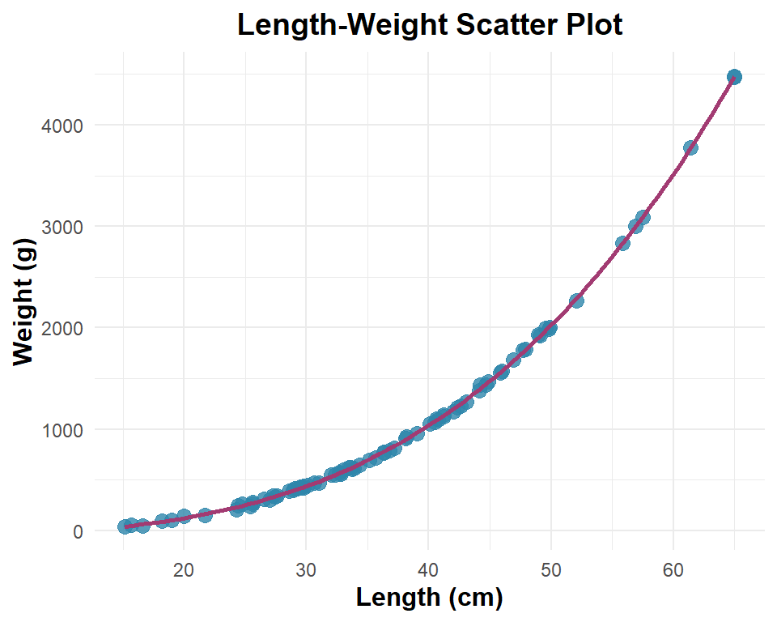
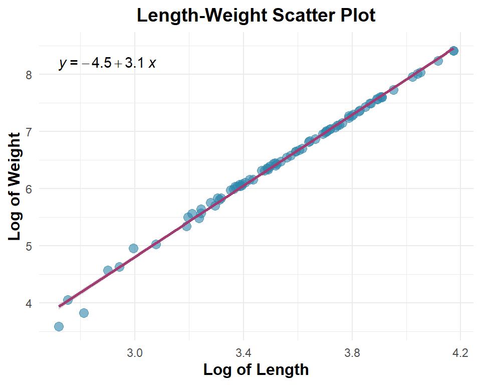
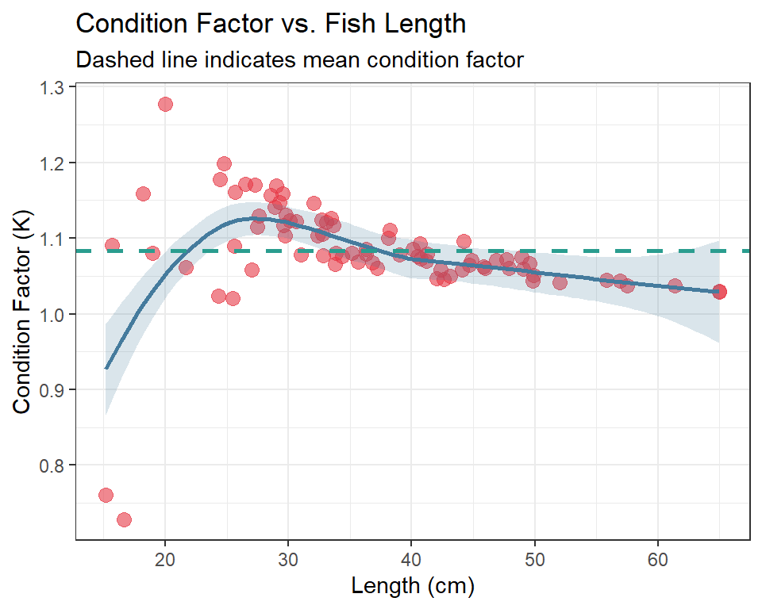
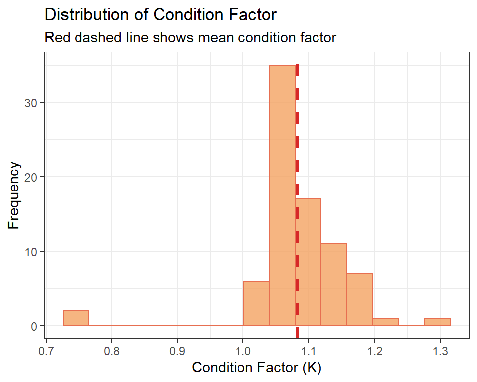

# Load libraries
library(tidyverse)
library(tidyplots)Length-Weight Relationship Analysis
Isometric Growth in Tanzanian Fish Species
Introduction
This practical exercise demonstrates the analysis of length-weight relationships in fish, using a case study of Snappers (Family Lutjanidae) from Tanzanian coastal waters. Snappers are important demersal fish in Tanzania’s fisheries and exhibit approximately isometric growth, meaning their body shape remains relatively constant as they grow.
The length-weight relationship is described by the equation:
\[W = a \times L^b\]
where:
- W = Weight (in grams)
- L = Length (in centimeters)
- a = Intercept (related to body shape/condition)
- b = Slope (scaling exponent, typically ~3 for isometric growth)
Objectives
- Analyze length-weight data from a Tanzanian marine fish species
- Fit a linear regression model to log-transformed data
- Visualize the relationship using ggplot2
- Extract parameter estimates (a and b)
- Interpret biological significance of the results
Data Generation
We’ll create realistic length-weight data for Red Snapper (Lutjanus campechanus) caught in Tanzanian waters. For isometric growth, we expect b ≈ 3.
# Set seed for reproducibility
set.seed(642)
# Generate length-weight data for Red Snapper (isometric growth)
# Parameters based on typical Tanzanian snapper populations
n_samples <- 80
lw_data <- tibble(
# Length in cm (realistic range for snappers: 15-65 cm)
length_cm = rnorm(n_samples, mean = 38, sd = 12) %>%
pmax(15) %>% pmin(65), # Constrain to realistic range
# Weight in grams, calculated from isometric relationship
# For snappers: W = 0.015 * L^3.02 (approximately isometric)
weight_g = 0.015 * (length_cm ^ 3.02) + rnorm(n_samples, mean = 0, sd = 15)
) %>%
# Ensure positive weights
filter(weight_g > 0) %>%
arrange(length_cm)Linear Regression Analysis
To extract the parameters a and b, we fit a linear model to the log-transformed equation:
lw_data |>
ggplot(aes(x = length_cm, y = weight_g)) +
geom_point(size = 3, alpha = 0.8, color = "#2E86AB") +
geom_smooth(method = "lm", se = TRUE, formula = y ~ poly(x, 3), color = "#A23B72", size = 1) +
# ggpubr::stat_regline_equation() +
labs(
title = "Length-Weight Scatter Plot",
x = "Length (cm)",
y = "Weight (g)"
) +
theme_minimal()+
theme(
plot.title = element_text(size = 14, face = "bold", hjust = 0.5),
axis.title = element_text(size = 12, face = "bold")
)
\[\log(W) = \log(a) + b \times \log(L)\]
This transforms the power-law relationship into a linear relationship suitable for regression analysis.
lw_log = lw_data |>
mutate(log_length = log(length_cm),
log_weight = log(weight_g))
fit_lw = lm(log_weight ~ log_length, data = lw_log) # model fitting
y_intercept = coef(fit_lw)[1]
slope = coef(fit_lw)[2]
# Calculating values for a
# log(a) = y_intercept => a = exp(y_intercept)
a = exp(y_intercept) # 0.01080354
b = slope # 3.110061lw_log |>
ggplot(aes(x = log_length, y = log_weight)) +
geom_point(size = 3, alpha = 0.6, color = "#2E86AB") +
geom_smooth(method = "lm", se = TRUE, formula = y ~ x, color = "#A23B72", size = 1) +
ggpubr::stat_regline_equation() +
labs(
title = "Length-Weight Scatter Plot",
x = "Log of Length",
y = "Log of Weight"
) +
theme_minimal()+
theme(
plot.title = element_text(size = 14, face = "bold", hjust = 0.5),
axis.title = element_text(size = 12, face = "bold")
)
Condition Factor Analysis
The condition factor (K or CF) is a measure of the fish’s health and robustness. It is calculated as:
\[K = \frac{W}{L^b} \times 100\]
where:
- W = Weight (in grams)
- L = Length (in centimeters)
- b = Slope from the length-weight equation (scaling exponent)
The condition factor indicates whether a fish is in good condition (higher values) or poor condition (lower values) relative to its size.
# Calculate condition factor for each fish
k_data <- lw_data %>%
mutate(
condition_factor = (weight_g / (length_cm ^ slope)) * 100,
# Also calculate relative condition factor (K_rel)
# Expected weight based on regression
expected_weight = a * (length_cm ^ slope),
relative_condition = (weight_g / expected_weight) * 100
)Condition Factor Visualization
Visualize how condition factor varies with fish size.
Plot 1: Condition factor vs. length
plot_cf_length <- k_data %>%
ggplot(aes(x = length_cm, y = condition_factor)) +
geom_point(size = 3, alpha = 0.6, color = "#E63946") +
geom_smooth(
method = "loess",
se = TRUE,
color = "#457B9D",
fill = "#457B9D",
alpha = 0.2,
size = 1
) +
geom_hline(
yintercept = mean(k_data$condition_factor),
linetype = "dashed",
color = "#2A9D8F",
size = 1
) +
theme_bw() +
labs(
title = "Condition Factor vs. Fish Length",
subtitle = "Dashed line indicates mean condition factor",
x = "Length (cm)",
y = "Condition Factor (K)"
)
plot_cf_length
Plot 2: Distribution of condition factor
plot_cf_dist <- k_data %>%
ggplot(aes(x = condition_factor)) +
geom_histogram(
bins = 15,
fill = "#F4A261",
color = "#E76F51",
alpha = 0.8
) +
geom_vline(
xintercept = mean(k_data$condition_factor),
linetype = "dashed",
color = "#D62828",
size = 1.2,
label = "Mean"
) +
theme_bw() +
labs(
title = "Distribution of Condition Factor",
subtitle = "Red dashed line shows mean condition factor",
x = "Condition Factor (K)",
y = "Frequency"
)
plot_cf_dist
Summary and Interpretation
The analysis demonstrates several key findings:
Growth Pattern: The slope value (b = 3.11) indicates that the Red Snapper exhibits isometric growth. With b ≈ 3, the fish maintains proportional body shape as it grows, meaning weight increases approximately with the cube of length.
Model Fit: The R² value of 0.9947 indicates that 99.5% of the variation in weight is explained by length. This is typical for biological length-weight relationships.
Parameter Estimates:
- a = 0.010804 - This relates to the body condition and shape of the fish
- b = 3.1101 - This scaling exponent is close to 3, confirming isometric growth
Fisheries Application: This relationship allows fisheries managers and researchers to:
- Estimate biomass from length measurements alone
- Monitor changes in population condition over time
- Assess growth rates and health status
- Convert between length and weight data in stock assessments
References
- Froese, R. (2006). Cube law, condition factor and weight-length relationships: History, meta-analysis and recommendations. Journal of Applied Ichthyology, 22(4), 241-253.
- Petitgas, P. (Ed.). (1998). Geostatistics in fisheries survey design and stock assessment. FAO Fisheries Technical Paper No. 368.
- Tanzania Fisheries Research Institute (TAFIRI). Length-weight relationships of East African fish species.
Exercise Date: “2026-01-07”